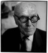

PHILIP JOHNSON
Philip Johnson (1906'da Ohio Cleveland'da doğdu. 2005 yılında, doksan sekiz yaşında Connecticus'daki ünlü Glass House'unda öldü.) modern mimarinin önemli figürlerinden biriydi. Modernist hareketin öncüsü olarak tanındı, aynı zamanda postmodernizmin ve yapısökümcülüğün de habercisi oldu. Yeteneği sayesinde 1979 yılında (mimarlığın Nobel'i olarak kabul edilen) Pritzker Ödülü'nü ilk alan kişi oldu ve American Institute of Architects'in altın madalyasını aldı. Harvard Üniversitesi'nde (Cambridge) felsefe öğrenimi gördükten sonra, Philip Cortelyou Johnson, bir yandan eleştirmen olarak, diğer yandan Museum of Modern Art mimari ve dizayn bölümü yöneticisi olarak (1930-1936 arasında) mimariye yöneldi. MOMA'da bulunduğu dönem sırasında özellikle Avrupa mimarisinin başarılarını (Le Corbusier) ve Bauhaus'un kavramlarını Amerikan kamuoyuna tanıtan "The International Style: Architecture since 1922" sergisini düzenleyerek ünlendi.
1939-1942 arasında Philip Johnson, Harvard'da Walter Gropious ve Marcel Breuer'in yanında mimari eğitimine başladı, sonra kendi ajansını açtı. 1946-1954 arasında, MOMA'da ayrıldığı bölüme yeniden katıldı; 1947 yılında bir sergisini dostu ve ustası Ludwig Mies van der Rohe'ye adadı ve Glass House'unu ("Cam Ev") inşa ederek ona olan saygısını ifade etti. Bu yapının minimalist mimarisi, hacimleri, renkleri ve malzemesi, Mies van der Rohe'nin ünlü Farnsworth House'undan (1945-1950) esinlenmiştir. 1956 yılında, otuz sekiz katlı camlı bir kule olan Seagram Building'i inşa etmek için Rohe'yle ve 1967 yılında Kreeger Müzesi için de Richard Foster'le birlikte çalıştı. Hem karmaşık hem büyük çaplı yapılarında ünlü bir mimar olan John Burgee'yle birlikte çok çeşitli siparişler üzerinde çalıştılar: Minneapolis'te IDS Center (1972), Kalifornia'da Crystal Cathedral (1980)... 1984 yılında, AT & T Corporate'in genel merkezi için (Sony Building olacaktır) birlikte planlar çizdiler.
Philip Johnson, ister Bielefeld'deki Kunsthalle olsun, ister Houston'daki Penzoil Place ya da New York'taki AT & T Building (1978-1982), Madrid'deki Puerta de Europa (1991-1995) ya da Viyana'daki Turning Point (1996) olsun, mimari deneyimleri aracılığıyla döneminin üslubunu öne çıkarmaya çalışırken eleştirel ruhunu daima korumuştur. Johnson'un yapıları yirminci yüzyılın mimari tarihindeki mimari biçimlerin açıklamalarıdır. Günümüzde bu tarihin bir sayfası kapanmıştır.

JOHNSON
Philip Johnson, mimari eğitiminize başlamadan önce Harvard'da tarih ve felsefe eğitimi gördünüz. Felsefenin çalışmanız üzerindeki etkisi nedir?
Felsefenin etkisi bana öğretilenle ters orantılı oldu: Üniversitede insan hayatında ihtiyaç duymadığı şeyler öğrenir. Hayat akademik dünyanın tersidir; dolayısıyla ben yalnızlık yöntemini tercih ediyorum. Bildik teorilerin her zaman karşısında oldum, bu durum gençliğimde kimi güçlükler çekmeme yol açtı. Sokrates'in teorilerine ve Platoncu kesinliklere karşıydım, kendimi, tersine, Nietzsche ve Heraklitos'un etkisinde hissediyordum. Onun bir yandaşı olarak şöyle diyordum: Yalnızca değişim var, mutlak yok, Bay Platon yanıldı. Onun küpü gerçekte dengi olmayan soyut bir nesne yalnızca. Sanatta her şey doğru ve iyidir. Artık hiçbir mimar Platon'un küpüne, onun ideal biçimlerine gönderme yapmıyor. Eskiden, elli yıl kadar önce, hâlâ ona inanıyordum. Ama o zamandan beri, benim mimarlığım dönüştü, ben dönüştüm, dünya dönüştü. Değişim homojenlikten çok daha önemli. Yaşasın farklılık! Çeşitliliği, alacalılığı, çoğulculuğu onaylayalım! Kronolojik olarak son çalışmamda Platoncu cisimlerle alay bile ediyorum. Birbirine bağlı dört bina var. Her birinin temelinde Platoncu cisimlerden biri bulunuyor. Ama onu deforme ediyorum, onunla oynuyorum. Çok yaşlı olmak gibi bir şansım var, dünyadaki tek olumlu şey yaş, çünkü insan gençken fazlasıyla aptal olur. Gençler yaşlanmayı dert edinir, ama yaşlıysan hiçbir şeyi dert etmezsin. Bugün hayatımın hiçbir evresinde olmadığım kadar mutluyum. En fazla aydınlandığım dönem bu, sanatsal bakımdan en usta olduğum dönem. Sürekli yetkinleşiyorum, gelecek on yıl tüm yaşamımın en verimli yılları olacak. Artık gökdelenler yapmıyorum, çünkü birkaç yıl sürecek bir görevi bir yaşlıya kimse emanet etmez, ama bunu gayet iyi yapabilecek durumdayım... Sadede gelelim: Rotterdam'da, benim çizdiğim büyük bir bina inşa ediliyor şu an, onun alevler biçimindeki silueti bende büyük sevinç yaratıyor...
Gençken Avrupa'da büyük yolculuklar yaptınız, örneğin Paris'te ve Chartres'da, Toscana ve Roma'da bulundunuz. Avrupa sanatıyla, katedrallerle ve kutsal yerlerle bu erken buluşma sizde ne izlenimler bıraktı?
Çocukluğumdan beri mimariye eğilimim var – tam olarak bilmeden elbette. 1919 yılında, on üç yaşımdayken, annemle Chartres katedralini ziyaret ettim. Öylesine etkilenmiştim ki gözyaşlarına boğuldum. Bu tepki, ayrıntılardan ne kadar yoksun olsa da, özünde mimariyi değerlendirmeyi sağlayan biricik ölçütü oluşturuyor. Kusursuz bir yapıyı ortaya çıkartabilecek yoğun duyguyu her zaman içimizde taşırız. Bir kez daha gerçekten kendimden geçtim – Akropol'ün üzerinde Parthenon'daydı. Yalnızca birkaç ayrıntı hatırlıyorum, sütunlar, başlıklar, kalkanlar, hepsi muhteşemdir.
1929 yılında, New York'taki Museum of Modern Art'ın kurucusu Alfred Barr sizi mimari ve dizayn bölümüne yönetici olarak atadı. Sizin kendinizden mimar olarak söz ettirmenizden çok önceki bir tarih.
Evet, mimari öğrenimime 1939'da başladım, müzenin kuruluşundan on yıl sonra. Alfred Barr benim gurum ve dostumdu. 1932 yılında modern mimari üzerine ilk Amerikan sergisini onunla birlikte düzenledim. Bu sergi, International Style işareti altında, bu ülkenin mimarisine büyük ölçüde katkıda bulundu, bu stil doruğunu ve nihai sonucunu Mies van der Rohe'nin Seagram Building'inde bulacaktır.
O dönemde, dizaynın temel noktasının işlev olduğunu, beton, çelik ve cam gibi yeni malzemelerden ve yeni yapım ilkelerinden yararlandığını yazmıştınız.
Benim akademik formasyonum öncelikle Platon'un, Aristoteles'in, Descartes'ın ve Aydınlanmacıların etkisi altındaydı; bana göre, işlevsel öğe ön plana geçiyordu. Bugün, durumu farklı görüyorum: İşlev, mimari için esin kaynaklarının en az yaşayabilir olanı, çünkü insan varlığını heyecanlandırabilecek biçimler üretmiyor. Yalnızca çok ender birkaç mimar bunu başarır. Yaşayanlar arasında bir tek Frank Gehry'yi görüyorum. Vaktiyle Chartres'da hissettiğime benzer bir ruh haline beni sokabilen tek yapı, Bilbao'da Gehry'nin Guggenheim Müzesi'dir. Her yıl oraya gidip onun uzam içinde sahnelediği bu biçim oyununa dair anımı tazelerim. Ve her seferinde benim büyülemeyi başarmaları karşısında şaşırıyorum.
Mimari tarihçisi Lewis Mumford, efsaneleşmiş bu sergi kataloğunda, şehirciliğin toplumsal ve politik görünümü üzerine bir deneme yazarak, sergilenen parçaların tamamen estetik sorular temelinde seçkinler arası bir karşılaşma olduğu önyargısına cevap verdi.
Mumford ve ben arkadaş değildik. Ben onu toplumsal programların yazarı ve parlak bir düşünür olarak kabul ediyordum, ama gözleri yoktu. İnsan körse sanat duyusu da yoktur. Bana göre, tersine, sanatın önemi çok büyüktür, çünkü ben her şeyi optik izlenimler dolayısıyla öğreniyorum. Toplumsal niyet son derece saygıdeğerdir, ama resmin ve heykelin tam tersine, bunun mimariyle en ufak bir ilişkisi yoktur. Mondrian'ın yapımcı kompozisyonları olmadan, dikdörtgen şeklindeki modern binaları düşünemeyiz bile.
Walter Groupius'un ve elbette ki kendinizi çok daha yakın hissettiğiniz Mies var der Rohe'nin çalışmalarını da sergilediniz.
Groupius'u da teorilerini ve yapım tarzını da neredeyse hiç sevmiyordum; bu tiksinti karşılıklıydı. O mimariyi toplumsal bir egzersiz olarak görüyordu, bu konuda birçok modern mimara benziyordu. Van der Rohe başka yapıda biriydi: büyük bir Katolik düşünürdü – ama mümin bir Katolik değil, bizi yakınlaştıran da buydu. Bunun ötesinde bir sanatçıydı ve mimarinin işlevselcilik içinde tükenmeyen bir sanat olduğunu biliyordu. Haklıydı da: Günümüzde her binanın merdivenlerinin ve asansörlerinin nerede olması gerektiğini bilmek kimseyi ilgilendirmiyor. Yale Üniversitesi'ndeki öğrencilerim plan çizmiyorlar, evleriyle heykeller yapıyorlar. Böylesi daha iyi: seni büyüleyen biçimlerle, sana uyumlu gelen biçimlerle işe başla.
"Object 1900" ve "Today of Machine Art" gibi sergiler düzenlediniz. Bu sergilerde özellikle özgül bir işlevi olmayan yararcı nesneler denen şeyle ilgilendiniz.
Evet, bunlar çok önemliydi ve öyle de kaldılar. Bugün oraya geri dönüyoruz. Örneğin Philippe Starck, çok yetenekli biri, kesinlikle hiçbir şeyi dert etmiyor, yalnızca nesneler üretiyor, kimi zaman hiçbir işe yaramayan şeyler, hatta çalışmıyorlar bile! Bu günümüz dizayncılarının çoğunu öfkelendiriyor; Alfred Barr ve benim eski halim kesinlikle buna karşı çıkardı.
Bauhaus okulunu düşündüğünüzde, onun teorilerinden, bilim, sanat ve teknik arasında kurmaya çabaladığı bağdan geriye ne kaldı? Siegfried Giedion Mechanization Takes Command'da (Mekanikleşme İktidarda) bundan söz etti.
Bauhaus 1920'li yıllarda bizi etkilemiş olan önemli tek stilistik akımdı ve hepimiz katılmıştık. Ne yazık ki, saygı duyduğum üyeleri ilkelerine pek o kadar bağlı olmayanlardı, özelikle Kandinsky, Klee ve diğer ressamlar. Onlar sanatsal özgürlüklerini korudular, yararlı nesnelere hiç dikkat etmediler. Buna karşılık Gropius, son derece inançlı bir Marksist, bütünüyle pratik yanlar üzerinde yoğunlaşmıştı.
Mies van der Rohe'nin stilinden uzaklaşmanız için 1960'lı yılları beklemek gerekti. Sonra, sizin çalışmalarınızda neo-klasik bir şey vardı. Geçmişi hatırlatan bir tür aristokratik mimari yaratmak için mermer ve bronz gibi malzemeleri giderek daha sık kullandınız.
Modernizme ve kara kutulara bir tepkiydi bu elbette! Bütün Amerikan şehirlerindeki tüm bu gökdelenler Seagram Building'e benzemek ister ama başaramazlar: Bunlar ucuz cam sandıklardı ve hâlâ da öyledir. Bu nedenle ben son derece klasik bu yolu tuttum, bu nedenle AT & T Building'i inşa ettim. Peşimden bir yığın dost mimar geldi. Son derece canlı bir hareketti bu, sonra durmuştur ama bugün de yeniden canlanıyor.
Her zaman aristokrat bir haliniz oldu. Bu, mimari konusundaki bütün popülist kavrayışları yalanlıyor. "Demokratik olmayan anlayışlar" savunmakla defalarca suçlandınız. Bu eleştiriyi ciddiye aldınız mı?
Almadım elbette! Demokrasi, kanıtlarını gerçeklik içinde oluşturan tek yönetim sistemi. Nasyonal-sosyalizmin ve komünizmin ortaya çıkışını ilgiyle izledim çünkü onlar devrim fikrinden esinlenmişlerdi. Ben her zaman devrimden yanayım, topyekûn dönüşümden yanayım, ama bunun mimariyle bir alakası yok. Bu tür eleştiriler beni kesinlikle etkilemiyor. Ben nasyonal-sosyalist oldum –kısa bir dönem için ama–, Oscar Niemeyer de komünist oldu. Bugün de hâlâ komünisttir kuşkusuz.
Niemeyer'in Rio de Janeiro'daki Avenida Atlantica üzerinde bürosuna girdiğinizde, Fransız Komünist Partisi'nin onur üyesi olduğunu belirten büyük metal yazıyı görünce insan anında çarpılıyor. Bugün de hâlâ bundan gurur duyuyor.
Duysun bakalım! Ben, Alman nasyonal-sosyalizmiyle yakınlıklarımdan övünmüyorum.
Koptunuz mu?
Elbette. Politik hareketler beni yaşayabilir oldukları ölçüde, mimariye bir katkıda bulundukları ölçüde ilgilendiriyor. Monarşi koşullarında da halkın uyguladığı iktidar biçimlerinde de durum buydu, ama ne Hitler'de ne Stalin'de böyledir.
İlk nasyonal-sosyalizm nasıl oldu da sizi cezbetti? Sizin seçkinci fikirlerinizden mi kaynaklanıyor bu?
İçimdeki sanatçı çağrıldığını hissetmişti. Kendi kendime, eğer bir adam yeni dünyada bize rehberlik ederse, anlamlı bir mimari sipariş eder ve işlerin demokraside alıştığımızdan daha iyi yürümesini sağlar diyordum. Bu belirgin nedenle Stalin'den önceki komünizmle flört ettim. Ama sonra hata belirginleşti: Hitler'in binaları Franklin D. Roosevelt'in döneminde inşa edilmiş binalara fazlasıyla benziyordu. Üstelik şunu da unutmamak gerekir, o koşullarda Mussolini modern sanatı coşkuyla karşıladı – ama devamını getiremedi, bu da, onunla birlikte başka bir yol arayanların tüm yanılsamalarının yitmesine yol açtı. Korkunç olan şey, bütün devrimci akımların diktatörlüklerle sonuçlanması, Hristiyanlık gibi yöneticilik misyonlarını yerine getirememesidir. O zamandan beri, dünyayı fethetmek ve devasa projeler gerçekleştirmek gerektiği duygusu içinde değilim. Ben, Ütopyaya sonuna kadar inanmış olan ve içinde yüz otuz bin kişinin yaşayacağı bir mil yükseklikteki şu ne yazık ki ünlü gökdeleni çizmiş olan Frank Llyod Wright'ın tersine, çok daha mütevazı oldum.
Sonuçta, onun tersine, siz Amerika'nın en büyük mimarı olduğunuzu ileri sürmediniz.
Değilim zaten. Buna karşılık, Frank Lloyd Wright dünyanın en büyük mimarıydı. Bir gün ona on dokuzuncu yüzyılın en büyük mimarı olduğunu söyledim, öfkeden kudurmuştu. Aslında onu incitmek istememiştim. O bir on dokuzuncu yüzyıl insanıydı, onun dünya anlayışı, sosyal demokrasinin damgasını taşıyan dönemin egemen atmosferine denk düşüyordu. Onu çok seviyordum. Derin bir dostlukla birbirimize bağlanmıştık.
Peyzajcı büyük ressam Roberto Burle Marx'la, Brezilya'da, Rio de Janeiro'da ve Brasilia'da, felsefeden ve ekolojiden esinlenen canlı doğayı şekillendirme çalışmalarıyla ilişkiniz neydi?
Onu özgür ruhlu biri olarak, bir dizayncı ve orijinal bir heykeltıraş olarak kabul ediyordum. Onun bahçeleri ne Fransız stilinden etkilenmişti, ne İngiliz stilinden. Ama ziyaret ettiğim yerleştirmelerinden hiçbiri bana gerçek bir duyumsal tatmin sağlamadı. Bu tür sınıflandırmalar üzerinde düşünmesem de, benim kendi peyzaj mimarim öncelikle İngiliz'dir.
Bir ara, kendinizi bir peyzaj mimarı olarak da kabul ettiğinizi söylemiştiniz.
Benim peyzajlarımın evlerimden daha iyi olduğunu düşünen çok insan var; şunu da belirtmeliyim ki, benim iki çalışma alanım birbirinden ayrılmaz. Örneğin burada, Connecticut'taki konutumda, New England kökenli duvarları ayakta bıraktım, on dokuzuncu yüzyıldan, ve onları daha da güçlü şekilde vurguladım, aralarında bulunan binalar ve alanlar için bir tür omurga oluştursunlar diye. Bu şekilde, çiftçilerin kullanmış oldukları peyzaj mimarisinden yararlandım.
Özgül ve sürekli bir stiliniz olmadığı şeklinde kimi eleştiriler alıyorsunuz. Sizin eklektik olduğunuz, fantasmalarınızı serbest bırakarak güzel evler inşa etmekle yetindiğiniz söyleniyor. Ayrıca, ustabaşılar karşısında belli bir oportünizmle davrandığınız da söyleniyor, çünkü Nelson Rockefeller ya da Donald Trump gibi önemli şahsiyetleri çalışmanızın kalitesi konusunda ikna etmeyi daima başardığınız söyleniyor. Ne pahasına olursa olsun dikkat çekmek istediğiniz söyleniyor.
Kıskançlıktan aptallığa ve kibire kadar varan bu tür tepkiler herhangi bir noktada doğru görülebilir. Beni bir oyuncu sandılar, çelişik fikirler savunan, halkı eğlendirmek için olası bütün stilleri deneyen iki suratlı bir adam sandılar, tutucu güçler işin içine karıştığı için AT & T Building'i inşa edebilmiş bir adam sandılar. Ama özünde ben yalnızca kendi mizacıma göre davranıyorum ve herhangi bir sanatçının yaptığı gibi, buna vücut veriyorum.
Kamusal binalar, büro ya da konutlar inşa ettiğinizde, bir merkezin etrafında, yapının farklı yanlarını birleştiren bir iç mekânın etrafında düzenlenmiş olmalarına dikkat gösteriyor musunuz? Aklıma Boston'daki kütüphaneniz geliyor. Abartarak ifade edersek: Mimarinin entelektüel bir merkezi olmalı mıdır?
Bu sorunun cevabını filozoflara bırakıyorum. Ben filozof değil, sanatçıyım. Boston Kütüphanesi'nde önemli bir merkez noktası var elbette: Bütünün bağdaşıklığını sağlayan büyük merdiven. Bu aynı zamanda benim klasisizme geçişimdir; onunla birlikte orijinal binaya saygımı da göstermek istedim. Eski ile yeni arasındaki bu almaşıklık mimarinin temel bir öğesidir.
Birkaç yıl önce Fransız antropolog Marc Augé bir tez savundu. Buna göre modern mimari vaktiyle kilisenin ya da pazar yerinin işgal ettiği "metafizik merkezler"ini yavaş yavaş kaybetmektedir. Bugünkü yaşantımızın ticaret merkezleri ve süpermarketler arasında, otobanlar ve havalimanları arasında, "olmayan-yer" diye adlandırdığı şeyler karşısında cereyan ettiğini belirtiyor. İnsanın burada kendi kimliğini, kendi metafizik merkezini yitirdiğini söylemektedir. Siz de bu tehlikeyi fark ettiniz mi?
Hayır: Bence geleneksel mimariyi başka araçlarla sürdürüyoruz. Benim şehircilik hayallerim şehrin günümüz yapısına ihtiyatlı bir şekilde müdahale etmeyi ve daha önce var olana bağlı olarak dönüştürmeyi hedeflemektedir. Örneğin New York'u ele alın; Manhattan'ı değil ama, orası tamamen yapılmıştır, tamamlanmıştır; ama gerisi, art-ülke, orda yükselen binalar görmek isterim, yerden otuz, kırk metre yükselen ve özgün dokuya zarar vermeden muhteşem biçimler oluşturan binalar. Polonya, İtalyan ve Yahudi mahallesi yok olmuyor, ama buralara modern, deyim yerindeyse ağırsızlık binalar giydiriliyor Bu, Le Corbusier'nin çalışmalarına yakın, ama önemi yok, çok değer veriyorum. Başka türde biçimler hayal ediyorum, elbette ucuz değil, her şeyi yerle bir edip yeniden yapmaktan her zaman için daha pahalı. Bu yerle bir etmeye Roma'da Papa II. Jules Via Giulia da kalkışmıştı, ama başarısız kaldı çünkü Romalılar kendi Ortaçağ mimarilerini korumak istiyorlardı. Örneğin büyük bir otoban hayal ediyorum, New York'taki demiryolu hatları gibi, yerin çok üzerinden geçecek ve yolun altında insanlar her zamanki meşguliyetlerini sürdürmeye devam edecekler. Şehirlerin ve kenar mahallelerin merkezine dokunmaya hakkımız yok ama havaya hiç güçlük çekmeden inşa edebiliriz.
Burada, Connecticut'daki New Canaan'da kendiniz için inşa ettiğiniz ve bugün içinde bulunduğumuz Glass House kuşkusuz ki yaşamınızın merkezi. Mies van der Rohe'nin yapılarıyla belli benzerlikler taşıyor.
Yine de Mie bundan nefret ederdi. İki nedenle. Aynı dönemde kendisi için inşa ettiği evin tersine, asılı vaziyette değil. Ayrıca, benim köşelerimden de nefret eder, çünkü bu köşeler klasik, çünkü onları direklerle destekledim ve kapıları camlı cephelerin ortasına yerleştirdim. Bu yapım ilkesini evin dört noktasında uyguladım. Mies bunu abartılı, fazla simetrik buluyordu. O serbest köşeleri tercih eder; bense, tersine, bugün bile onları oldukları haliyle seviyorum.
Tarihleştirici bir mimariyi her zaman tercih ettiğiniz belli oluyor; geçmişin temel önemdeki biçimsel öğelerini çağdaş ifade biçimlerine katma imkânı sağladığı kesin. İnsana entelektüel köklerinin çok derin olduğunu ve varlığının statüko içinde tükenmediğini hatırlatıyor. Dinsel yapılar da yaratmış olmanızın nedenlerinden biri kuşkusuz bu. Kaliforniya'daki Garden Grove'da Crystal Cathedral, Indiana'daki New Harmony'de Roofless Church... Fakat, çok uzun zamanlardan beri insan varlığını doğaüstü güçlerle ve kozmik düzenle ilişkiye sokan geçmiş duygusunu günümüz mimarisi hangi ölçülerde yansıtmaktadır? Kesin olarak yok etmiş olmasın?
Bu önemli bir soru, ama ne yazık ki cevap vermem imkânsız. Gerçekten de, dinsel saygımı ve hayranlığımı ifade etmek için Altamira'nın ya da Lascaux'nun kaya resimlerinin olduğu bir döneme gönderme yapıyorum. Ama burada ve şimdi neye saygımı belirtebilirim? Bunun için gereken koşullardan yoksunum, yoksunuz. Bütün olarak modern sanatın karşı karşıya olduğu şeyi, yani kutsallık yokluğunu düşünmem gerek. Bu anlamda Picasso işini pek de kötü başarmış biri değildir. Ben mimarinin Picaso'su olacak genç mimarı arıyorum. Biri gelecek!
Demek ki, kutsallığa dair global bir fikre sahip olmadan kiliseler çizilebileceğine inanıyorsunuz.
Kesinlikle, benim bunları inşa etme nedenim vaktiyle Charteres'ta ya da bugün Bilbao'daki Guggenheim Müzesi'nde hissettiğim duygunun aynısını hissetme isteğim.
Crystal Cathedral'i "tinsel eğlence" yeri olarak nitelemiştiniz.
Öyle mi? Tuhaf bir tanım, ama bu katedral benim için gerçekten şans oldu. İlk planlarda bu öngörülmemişti; ama sonra, mülk sahibi onları incelediğinde bana, "Philip ben dua ederken bütün dünyayı görmek isterim," dedi. İşte şimdi tüm dünyayı görüyor.
Gelecek yüzyıla, hatta binyıla dair özel bir dileğiniz var mı?
Hayır. Benim için, başlayan sıradan bir yeni yıl; diğer spekülasyonlardan tiksiniyorum. Kaliforniya'da Big Sur'da bir evim var, dünyanın en olağanüstü yeri. Sürekli oraya gidiyorum ve bakmaktan başka bir şey yapmıyorum.
İnsanlığı ya da bütün olarak yerküreyi ilgilendiren hiçbir hayal, hiçbir mesaj yok mu?
Mevcut haliyle insanlık benim için yok. Çağımızın sanatından daha az önemli, ona da yalnızca birkaç büyük sanatçı katkıda bulunuyor. Ama mimarinin resim için daha iyi verimli bir toprak olabilmesi amacıyla belki mimaride reform yapabiliriz.
Sizce mimari bundan böyle hangi rotayı izlemelidir?
Genç kuşağı ve sonrakileri biçimler üzerine düşünmeye ve kendi yollarını izlemeye teşvik etmek isterim. Sanatın iyi yanı, ne pratik sorunları ne de felsefi sorunları dert etmesidir. Sözcüklerle pek ifade edilemeyen estetik bakış açılarından esinlenir. Sözcükler ilerletmez. Önem taşıyan tek şey, bireyin hayal gücüdür.